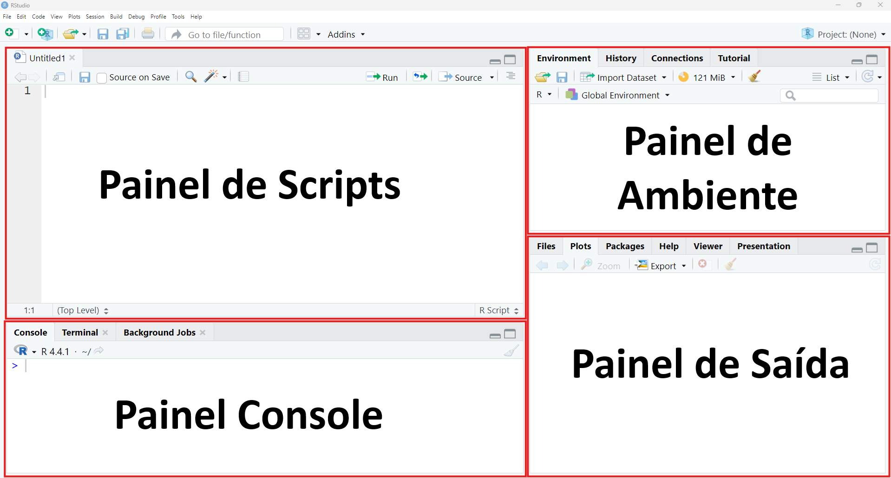

x <- 10
x = 10Aula 01
Pré-requisitos:
Instalar os pacotes: - sf - terra - dplyr - data.table - mapview - osmdata - geobr - geocodebr
Interface do RStudio
Após instalar, em sequencia, o R e o RStudio, abra o RStudio e observe a sua interface (Figura 01).

Painel de Scripts
Painel onde você pode editar e salvar scripts em R ou criar documentos computacionais, como Quarto e R Markdown.
Painel de Ambiente
Painel que exibe os objetos temporários em R à medida que são criados durante a sessão do R.
Painel Console
Painel utilizado para escrever comandos curtos e interativos em R.
Painel de Saída
Painel que exibe os gráficos, tabelas ou resultados em HTML gerados pelo código executado, juntamente com os arquivos salvos em disco.
Regras básicas da sintaxe do R
A seguir são apresentadas as regras básicas da sintaxe da linguagem R
Como atribuir valores a variáveis
A atribuição de um valor a uma variável é feita através dos operadores <- ou =:
Sensibilidade a maiúsculas e minúsculas
O R diferencia atributos e nomes de variáveis em letras maiúsculas e minúsculas:
Altura <- 170
altura <- 180
print(Altura)[1] 170print(altura)[1] 180"SP" == "sp"[1] FALSEComo comentar códigos
Os comentários servem como anotações para organizar o código e torná-lo mais fácil de compreender e replicar. Para inserir um comentário, utilize o operador #. Esse operador pode ser utilizado como cabeçalho para descrever blocos de código, no início de uma linha para evitar que o código seja executado ou ao final de uma linha de código. Para comentar um bloco inteiro de código, selecione as linhas desejadas e pressione Crtl + Shift + C:
# Vamos agora atribuir o valor 170 para a variável Altura
Altura <- 170
altura <- 180 # Agora atribuímos o valor 180 para a variável altura
# print(altura) # dessa forma evitamos a impressão do valor da variável.Instalação de pacotes
Para instalar pacotes no RStudio, é utilizada a função install.packages() no console do RStudio:
install.packages()Para instalar diversos pacotes de uma única vez, digite no console do RStudio a função install.packages () utilizando como argumento os pacotes sf, terra, dplyr, data.table, mapview, osmdata, geobr e geocodebr, que são alguns dos pacotes que serão utilizados ao longo da disciplina:
install.packages("sf", "terra", "dplyr", "data.table", "mapview", "osmdata", "geobr", "geocodebr")Após instalar os pacotes, carregue-os na sessão atual através da função library():
library(sf)Referências:
https://docs.posit.co/ide/user/